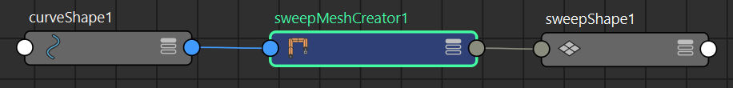

从曲线创建扫描网格时会创建 sweepMeshCreator 节点（请参见从曲线创建网格）。

将“扫描网格”(Sweep Mesh)同时应用于多条曲线时，默认情况下，它们将使用单个创建器节点，因此，您无法调整单条曲线的属性。如果要单独使用每条曲线（例如，在使用发卡时），请选择“创建 > 扫描网格”(Create > Sweep Mesh) >  ，此时将打开一个选项窗口，您可以选择是为所有曲线还是为每条曲线创建一个 sweepMeshCreator 节点。请参见使用“扫掠网格”(Sweep Mesh)从网格创建曲线中的从多条曲线创建网格。
，此时将打开一个选项窗口，您可以选择是为所有曲线还是为每条曲线创建一个 sweepMeshCreator 节点。请参见使用“扫掠网格”(Sweep Mesh)从网格创建曲线中的从多条曲线创建网格。
另外，可以在脚本编辑器中使用以下命令为每条曲线创建单独的创建器节点：
sweepMeshFromCurve -oneNodePerCurve true;
将此命令设置为 false 可恢复默认行为。
注： 在您使用“自定义扫描剖面”(Custom Sweep Profile)形状时，会创建一个名为 sweepProfileConverter 的辅助节点。
- 插值距离(Interpolation Distance)
- 沿路径全长的确切细分数
- 插值精度(Interpolation Precision)
- 使用 0 到 100 的范围来确定细节量（100 是最大设置，使用此设置得到的密度最高）。
- 插值步长(Interpolation Steps)
- 设置沿路径全长的确切细分数。
- 法线平滑(Normals Smoothing)
- 基于面角度软化/硬化边。
- 图案覆盖(Pattern Coverage)
- 定义围绕路径的重复元素的间距（值为 1 表示完全覆盖）。
- 图案元素数(Pattern Number of Elements)
- 剖面的重复次数。
- 图案旋转元素(Pattern Rotate Elements)
- 围绕路径的重复元素的方向。
- 图案缩放元素 X(Pattern Scale Elements X)
- 图案中每个元素各自在 X 轴上的大小（这是“缩放剖面”(Scale Profile)设置的倍增）。
- 图案缩放元素 Y(Pattern Scale Elements Y)
- 图案中每个元素各自在 Y 轴上的大小（这是“缩放剖面”(Scale Profile)设置的倍增）。
- 剖面弧形角度(Profile Arc Angle)
- 圆弧的角度，介于 0º 和 360º 之间。
- 剖面弧形分段(Profile Arc Segments)
- 沿圆弧形状的细分数。
- 剖面多边形内径(Profile Poly Inner Radius)
- 星形剖面的内部大小（相对于缩放剖面）。
- 剖面多边形边(Profile Poly Sides)
- 凸面或星形剖面形状的细分数
- 剖面矩形角深度(Profile Rect Corner Depth)
- 角的圆度（值为 0 时将以 45º 展平，值为负时将向内圆化）。
- 剖面矩形角半径(Profile Rect Corner Radius)
- 矩形剖面角点处的倒角半径。
- 剖面矩形角分段(Profile Rect Corner Segments)
- 矩形剖面角点处的分段数。
- 剖面矩形高度(Profile Rect Height)
- 矩形剖面的高度。
- 剖面矩形宽度(Profile Rect Width)
- 矩形剖面的宽度。
- 剖面波振幅(Profile Wave Amplitude)
- 波的高度。
- 剖面波周期(Profile Wave Cycles)
- 波数
- 剖面波偏移(Profile Wave Offset)
- 沿剖面宽度移动波图案。
- 剖面波分段(Profile Wave Segments)
- 沿圆弧形状的细分数。
- 旋转剖面(Rotate Profile)
- 剖面相对于路径的方向。
- 缩放剖面 X(Scale Profile X)
- X 轴上剖面相对于路径的宽度。
- 缩放剖面 Y(Scale Profile Y)
- Y 轴上剖面相对于路径的宽度。
- 锥化(Taper)
- 相对于起始缩放剖面值，增加或减少剖面沿路径的缩放（值为 0 表示将缩小到路径终点处的点）
- 平移剖面 X(Translate Profile X)
- X 轴上剖面相对于路径的位置。
- 平移剖面 Y(Translate Profile Y)
- Y 轴上剖面相对于路径的位置。
- 扭曲(Twist)
- 剖面围绕路径长度旋转的次数（值 1 表示完整的 360º 旋转）。